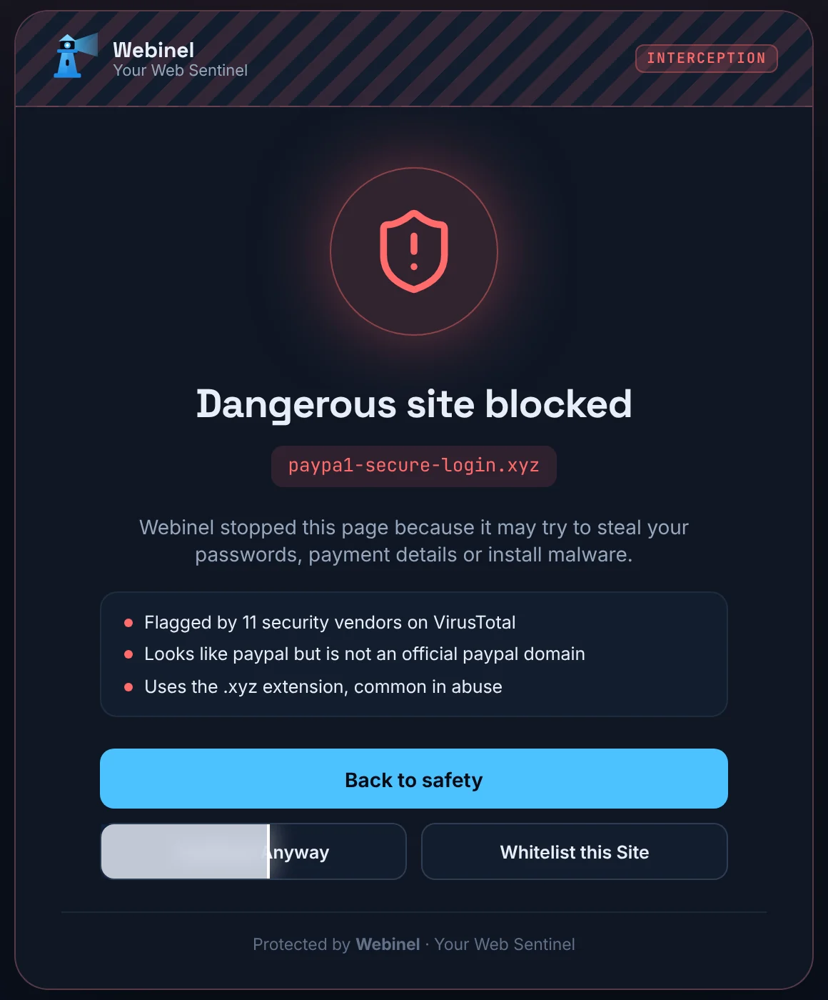

Real-time protection
Every page you open is checked against local heuristics, the Smart Cache and VirusTotal. Dangerous pages are blocked with a full-page warning; suspicious ones are flagged, or blocked if you prefer.
- Look-alike and homoglyph domains:
paypa1,rnicrosoft - Brand names on foreign domains, raw IPs, punycode, risky TLDs
- Password forms that post elsewhere or load over plain HTTP
